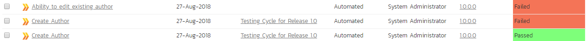
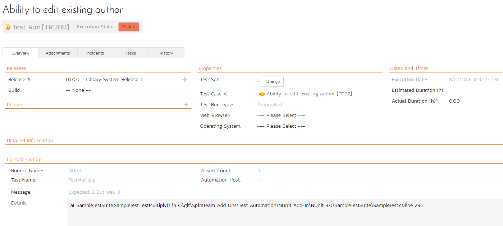
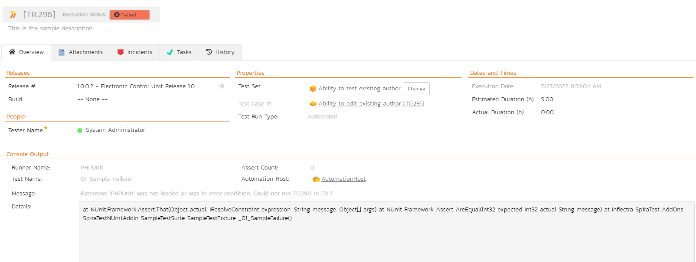

Integrating with NUnit¶
NUnit 3¶
SpiraTest/SpiraTeam/SpiraPlan (hereon called SpiraPlan) integrates seamlessly with NUnit 3, using our dedicated NUnit add-in. The add-in lets you run unit tests against a .NET application and get the results recorded in SpiraPlan as a test run against a specific test case. The add-in is designed to let you run your suite of unit tests against the application as part of your CI/CD pipeline. The add-in does not - and does not need to - integrate with your CI/CD engine.
To use the add-in you must have:
- a working installation of SpiraPlan v5.0 or later
- NUnit v3+ installed
- Nunit v3+ Console Runner installed. This is required for batch execution, which is the expected use case for the add-in (either as a standalone installation or as a nuget package)
Installing the NUnit 3 Add-In¶
Please follow the steps below to download and install the add-in:
- Download the add-in's zip file from the Inflectra downloads page.
- Unzip the archive
- Copy SpiraTestNUnitAddIn.dll and Newtonsoft.Json.dll into the the NUnit console runner's addins/tools folder. If the runner is installed as a standalone application, this is typically either: "C:\Program Files (x86)\NUnit.org\nunit-console\addins" or "C:\Program Files (x86)\NUnit.org\nunit-console\tools". See the box below if you are using nuget.
-
Once copied, open the NUnit addins file:
- if your NUnit has an addins folder: open the nunit.bundle.addins file in the folder "C:\Program Files (x86)\NUnit.org\nunit-console" and add a new line to the file that says
addins\SpiraTestNUnitAddIn.dll - if your NUnit has a tools folder: open the nunit.console.nuget.addins file in that tools folder and add a new line to the file that says
SpiraTestNUnitAddIn.dll
- if your NUnit has an addins folder: open the nunit.bundle.addins file in the folder "C:\Program Files (x86)\NUnit.org\nunit-console" and add a new line to the file that says
Using NUnit and the console runner from NuGet
If integrating via NuGet, find the location of the the version of the NUnit Console Runner referenced by the PATH variable in your windows environment variables.
When installing the console runner via NuGet, this PATH variable will not be set for you. We recommended you do this manually. You should set this new PATH variable to a filepath which ends at the folder containing the nunit3-console.exe you wish to execute.
- If you cannot or do not wish to add a new PATH variable, you must replace "nunit3-console" in each console command with a filepath to the correct nunit-console.exe file (the file its self, not the folder like the PATH variable expects).
- If installing globally via NuGet, there will be a folder approximately at C:/Users/{your username}/.nuget/packages/nunit.consolerunnner which contains different versions, it is important that the version you are executing is the version you place the .dll files next to and make the appropriate file changes. .nuget is hidden so make sure to have show hidden folders enabled or manually navigate to the folder.
- If installing within a solution's packages folder instead of globally (not recommended), the files you are looking for will be within that solutions packages folder.
If you've followed all the steps correctly, the SpiraPlan NUnit add-in should now be properly installed. For reference your nunit.bundle.addins file may look something like this:
addins/nunit.v2.driver.dll
addins/nunit-v2-result-writer.dll
addins/nunit-project-loader.dll
addins/vs-project-loader.dll
addins/teamcity-event-listener.dll
addins/SpiraTestNUnitAddIn.dll
Using NUnit 3 with SpiraTest¶
For this example, we will be using the following sample test fixture:
using NUnit.Framework;
namespace SampleTestSuite
{
[TestFixture]
class SampleTest
{
int One, Two;
[SetUp]
protected void SetUp()
{
One = 1;
Two = 2;
}
[Test]
public void TestAdd()
{
int Result = One + Two;
//will succeed
Assert.AreEqual(Result, 3);
}
[Test]
public void TestMultiply()
{
int Result = One * Two;
//will fail
Assert.AreEqual(Result, 3);
}
[Test]
public void TestConcat()
{
string Result = string.Concat(One, Two);
//will fail
Assert.AreEqual(Result, "21");
}
}
}
Create a new file called (exactly) SpiraConfig.json. We recommend creating one of these files for your entire solution and saving it in a convenient location. This can be in the root folder of your unit tests, or the root folder of your whole solution.
{
"credentials": {
"url": "localhost/SpiraPlan",
"username": "fredbloggs",
"token": "{XXXXXXXX-XXXX-XXXX-XXXX-XXXXXXXXXXXX}",
"project_id": 1,
"release_id": 5,
"test_set_id": 1
},
"test_cases": {
"default": 20,
"TestAdd": 21,
"TestMultiply": 22
}
}
You can also avoid setting specific test case IDs through the JSON file and instead place the TestCaseId's directly in the test suite's code. These 2 methods can be used together, with the test suite property for TestCaseId taking priority over the ID set in the JSON file. If using properties you still need the JSON file to store credentials and the "default" test case ID.
A minimum JSON file, if only using properties for test case ids is:
{
"credentials": {
"url": "localhost/SpiraPlan",
"username": "fredbloggs",
"token": "{XXXXXXXX-XXXX-XXXX-XXXX-XXXXXXXXXXXX}",
"project_id": 1,
"release_id": 5,
"test_set_id": 1
},
"test_cases": {
"default": 20
}
}
An example of using properties inside C# is:
using NUnit.Framework;
namespace SampleTestSuite
{
[TestFixture]
class SampleTest
{
int One, Two;
[SetUp]
protected void SetUp()
{
One = 1;
Two = 2;
}
//testcaseid is not case sensitive - any capitalization scheme will work
[Test, Property("testcaseid", 234)]
public void TestAdd()
{
int Result = One + Two;
//will succeed
Assert.AreEqual(Result, 3);
}
[Test, Property("TestCaseId", 235)]
public void TestMultiply()
{
int Result = One * Two;
//will fail
Assert.AreEqual(Result, 3);
}
[Test, Property("TESTCASEID", 236)]
public void TestConcat()
{
string Result = string.Concat(One, Two);
//will fail
Assert.AreEqual(Result, "21");
}
}
}
For the plugin to work, you must have credentials, and an assigned test case ID for each test either through the JSON file or the test file. Any combination of the 2 test case ID assignment methods can be used, and will not block the other one from working. The TestCaseId property assigned in test code will take priority over TestCaseId's assigned through the JSON file. If a test case id cannot be found for a given method in either of these locations and there is no default, a warning will be logged above the NUnit test summary which says which method was not reported to Spira.
In the credentials group you must specify:
- url -- The base url to your SpiraPlan installation, without a '/' at the end.
- username -- The username you use to sign into SpiraTest.
- token -- Your RSS Token. Found in your profile page as the "RSS Token" field, you must have RSS Feeds enabled for this to work.
- project_id -- The ID of the project you would like the test runs to be sent to
- release_id -- OPTIONAL -- Use if you would like to associate the test run with a release.
- test_set_id -- OPTIONAL -- Use if you would like to associate the test run with a test set.
In the test_cases group, put the following:
- default -- The default test case ID for functions without an assigned test case
- {method name} - Used to override the default setting above by providing the specific test case id for each method in your NUnit fixture(s).
Good practice tips
You can have multiple SpiraConfig.json files - one per subfolder in your projects's unit test folder, for example. This can help with maintenance of the json file.
However, when running the test cases it will likely be easier and less error prone to have a single SpiraConfig.json folder for every test in every fixture. If following this approach make sure that each unit test method name is globally unique.
Running the Tests with NUnit¶
To execute the tests, you should use the NUnit console runner. To do this we need to do two things:
- make sure the command line is in the directory where your SpiraConfig.json is
- tell the NUnit console to run the relevant test suite (note that you can use all features of the CLI to handle parameters and filter tests and this will not impact the Spira add-in at all)
Example command line commands
In this example:
- we have a test project that is in a folder on the C drive called TestProject
- our SpiraConfig.json file is in the root folder of this project
- we have a test suite called SampleTestSuite that we want to execute
To correctly run the tests and record the results to SpiraPlan, run the following two commands:
cd C:\TestProjectnunit3-console "C:\TestProject\bin\Release\SampleTestSuite.dll"(If you installed NUnit via NuGet and have not assigned the PATH variable for this console command, you will have to manually reference the NUnit3-console.exe file using a file path instead - This must be inside of quotes just like the second part of the command is)
Once you run your tests with the NUnit Console Runner, you should see the results in SpiraPlan:

Clicking on one of the test runs will show you the results:

Congratulations... You are now able to run NUnit automated tests and have the results be recorded within SpiraPlan.
Installing the NUnit 2.x Add-In¶
This section outlines how to install the SpiraTest Add-In for NUnit onto a workstation so that you can then run automated NUnit tests against a .NET application and have the results be recorded as test runs inside SpiraTest. It assumes that you already have a working installation of SpiraTest v2.2 or later. If you have an earlier version of SpiraTest you will need to upgrade to at least v2.2 before trying to use this add-in. You will also need to have either version v2.5.5 or v2.6.3 of NUnit, since there are two versions of the add-in that have been compiled with the v2.5.5 and v2.6.3 NUnit APIs. If you are using a different version, please visit www.nunit.org to obtain the appropriate version (2.5.5 or 2.6.3).
To obtain the version of the add-in that is compatible with your version of SpiraTest, you simply need to go to http://www.inflectra.com/SpiraTest/Downloads.aspx or http://www.inflectra.com/SpiraTeam/Downloads.aspx and download the NUnit Add-In zipfile.
Once you have obtained the NUnit Zipfile from our website, you should extract all the files from zip archive into a temporary folder on your computer (e.g. C:\Temp).
Next, you should copy the add-in libraries to the folder NUnit expects to find them in. First, if you are running any instances of the NUnit GUI, close them. Then, copy the SpiraTestNUnitAddIn.dll assembly from its location in the temporary folder to the NUnit Add-In folder (typically C:\Program Files\NUnit 2.5.5\bin\net-2.0\addins).
Now you can restart the NUnit GUI application. To check that the add-in was loaded successfully, click on Tools > Addins... to bring up the list of loaded add-ins:

You should see an entry marked "SpiraTest Addin" listed with its detailed description and status "Loaded". If this does not happen, try closing and reopening NUnit.
Using NUnit 2.x with SpiraTest¶
The typical code structure for an NUnit test fixture coded in C# is as follows:
using System;
using NUnit.Framework;
namespace Inflectra.SpiraTest.AddOns.SpiraTestNUnitAddIn.SampleTestSuite
{
/// <summary>
/// Sample test fixture that tests the NUnit SpiraTest integration
/// </summary>
[TestFixture]
public class SampleTestFixture
{
[SetUp]
public void Init()
{
//Do Nothing
}
/// <summary>
/// Sample test that asserts a failure
/// </summary>
[Test]
public void _01_SampleFailure()
{
//Failure Assertion
Assert.AreEqual (1, 0);
}
/// <summary>
/// Sample test that succeeds
/// </summary>
[Test]
public void _02_SamplePass()
{
//Successful assertion
Assert.AreEqual (1, 1);
}
/// <summary>
/// Sample test that fails
/// </summary>
[Test]
public void _03_SampleIgnore()
{
//Failure Assertion
Assert.AreEqual (1, 0);
}
}
}
The .NET class is marked as an NUnit test fixture by applying the [TestFixture] attribute to the class as a whole, and the [Test] attribute to each of the test assertion methods individually -- highlighted in yellow above. When you open up the class in NUnit and click the <Run> button it loads all the test classes marked with [TestFixture] and executes all the methods marked with [Test] in turn.
Each of the Assert statements is used to test the state of the application after executing some sample code that calls the functionality being tested. If the condition in the assertion is true, then execution of the test continues, if it is false, then a failure is logged and NUnit moves on to the next test method.
So, to use SpiraTest with NUnit, each of the test cases written for execution by NUnit needs to have a corresponding test case in SpiraTest. These can be either existing test cases that have manual test steps or they can be new test cases designed specifically for automated testing and therefore have no defined test steps. In either case, the changes that need to be made to the NUnit test fixture for SpiraTest to record the NUnit test run are illustrated below:
using System;
using NUnit.Framework;
using Inflectra.SpiraTest.AddOns.SpiraTestNUnitAddIn.SpiraTestFramework;
namespace Inflectra.SpiraTest.AddOns.SpiraTestNUnitAddIn.SampleTestSuite
{
/// <summary>
/// Sample test fixture that tests the NUnit SpiraTest integration
/// </summary>
[
TestFixture,
SpiraTestConfiguration (
"http://<server name>/SpiraTest",
"<username>",
"<password>",
<project id>,
<release id>,
<test set id>,
<runner name>
)
]
public class SampleTestFixture
{
[SetUp]
public void Init()
{
//Do Nothing
}
/// <summary>
/// Sample test that asserts a failure
/// </summary>
[
Test,
SpiraTestCase (<test case id>)
]
public void _01_SampleFailure()
{
//Failure Assertion
Assert.AreEqual (1, 0);
}
/// <summary>
/// Sample test that succeeds
/// </summary>
[
Test,
SpiraTestCase (<test case id>))
]
public void _02_SamplePass()
{
//Successful assertion
Assert.AreEqual (1, 1);
}
/// <summary>
/// Sample test that does not log to SpiraTest
/// </summary>
[
Test
]
public void _03_SampleIgnore()
{
//Failure Assertion
Assert.AreEqual (1, 0);
}
}
}
The overall class is marked with a new [SpiraTestConfiguration] attribute that contains the following pieces of information needed to access the SpiraTest test repository:
- URL - The URL to the instance of SpiraTest being accessed. This needs to start with http:// or https://.
- User Name - A valid username for the instance of SpiraTest.
- Password - A valid password for the instance of SpiraTest.
- Project Id - The ID of the project (this can be found on the project homepage in the "Project Overview" section)
- Release Id (Optional) - The ID of the release to associate the test run with. This can be found on the releases list page (click on the Planning > Releases tab). If you don't want to specify a release, just use the value -1.
- Test Set Id (Optional) -- The ID of the test set to associate the test run with. This can be found on the test set list page (click on the Testing > Test Sets tab). If you don't want to specify a test set, just use the value -1. If you choose a test set that is associated with a release, then you don't need to explicitly set a release id (i.e. just use -1). However if you do set a release value, it will override the value associated with the test set.
- Runner Name -- This should be set to NUnit so that the test results recorded in SpiraTest have the name 'NUnit' associated with them.
In addition, each of the individual test methods needs to be mapped to a specific test case within SpiraTest. This is done by adding a [SpiraTestCase] attribute to the test method together with the ID of the corresponding test case in SpiraTest. The Test Case ID can be found on the test cases list page (click the "Test Cases" tab).
For these attributes to be available in your test fixture, you also need to add a reference to the SpiraTestFramework.dll assembly. This assembly can be found in the temporary folder that you extracting the add-in to. It is recommended that you move this file from the temporary folder into a permanent folder located within your .NET project.
Now all you need to do is compile your code, launch NUnit, run the test fixtures as you would normally do, and when you view the test cases in SpiraTest, you should see an NUnit automated test run displayed in the list of executed test runs:

Clicking on one of the NUnit test runs will bring up a screen that provides information regarding what NUnit test method failed, what the error was, together with the associated code stack-trace:

Congratulations... You are now able to run NUnit automated tests and have the results be recorded within SpiraTest. The sample test fixture SampleTestSuite.cs is provided with the installation.
Have Questions or Need Assistance?¶
If you are an Inflectra customer, please contact our customer support at: - Email: support@inflectra.com - Help Desk: https://www.inflectra.com/Support/
Otherwise, please feel free to post a question on our public forums: - Test Case Integration Forum